電磁學基礎 (2) -- 向量微積分 (作者：陳鍾誠)
在上一期當中，我們已經介紹了電磁學的一些基本概念，該文網址如下：
在本期當中，我們將會說明電磁學的理論基礎，特別是有關向量微積分的部份。
前言
為了要描述「力場、電場、磁場」等這些概念，物理學家與數學家發展出了通用的「向量場」觀念， 這些觀念與微積分中的「無窮小」概念整合後，就發展出了「通量、環量、散度、旋度」等等數學 描述，透過這些數學描述，我們就能更快速的進入「馬克斯威」的電磁理論領域。
通量與散度
在一個向量場當中，通量是指通過某個表面的向量總數，通常用積分的方式累加計算，例如在以下的圖 (a) 中，由於該粒子帶正電，會對其它正電粒子產生排斥力，因此其電場是向外發射的，於是若我們在電子外部加一個包覆球面， 那麼通過該球面的電通量就會是正的，而且電通量大小就會是該粒子的電量大小。

圖、電場與電通量
同樣的、在圖 (b) 中由於粒子帶負電，會對其它正電粒子產生吸引力，因此其電場是向內集中的，所以通過包覆球面的電通量就會是負的。
如果該帶電粒子的電量較大，那麼我們通常會把電場線畫多一點，這種較密集的電場線在視覺上可以強調哪一部份的電場較強， 如以上的圖 (c) 所示。
看過這個範例，我們就可以來正式定義「通量」的概念了。
定義：通量

直覺意義：
F 是一個向量場 (例如電場)，S 是一個曲面。
代表向量場與曲面法向量的內積。
向量場 F 與整個曲面 S 的法向量內積總和，即是通量。
通量大於零 (通量 > 0) 代表有向外發射的傾向。
通量小於零 (通量 < 0) 代表有向內匯集的傾向。
在以上的定義當中，曲面 S 並沒有要求是封閉的 (像汽球一樣)，但是假如 S 是一個封閉曲面，那麼我們通常會用以下的環狀積分來代表這種封閉的情況。

對於電場而言，通常我們在意的是環狀曲面的通量，因此可以用上述環狀積分符號 來表示此種情況。
通量的概念不只適用於一個粒子產生的電場，而是任何的電場都可以適用的。例如以下是兩個粒子所產生的電場，其中圖 (a) 是兩個負電粒子所產生的電場，所以如果在兩者之外定義一個封閉曲面，那麼其電通量將會是這兩個粒子的負電量總合。
同樣的，如果是像圖 (b) 這樣一正一負的兩個粒子，那麼通過外部封閉曲面的電通量，將會因為正負相互抵消而變成零。

圖、兩個帶電粒子產生的電場與電通量
如果、我們想用微積分的概念，透過很多微小區塊的積分來計算通量總合的話，那麼我們就可以定義一個非常微小區域的通量密度，這種逼近無限小的平均通量概念，就稱為散度。其定義如下：
定義：散度
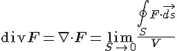直覺意義：
F 是一個向量場 (例如電場)，S 是一個封閉曲面，V 是封閉曲面所包圍的體積。
代表封閉曲面 S 的通量。
散度是發散點或內聚點的衡量值。
發散點箭頭向外散射（散度 > 0)。
內聚點箭頭向內聚射 (散度 < 0)。
散度是單一點的通量密度。
如果某一點的散度大於 0，代表那個點向外射出的向量比向內射入的多，如果小於零則代表向內射入的向量比向外射出的多。
定理：散度定理，又稱「高斯散度定理」。
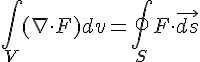直覺意義：
V 是空間中的一個區域，而 S 是 V 的表面。
V 區域的散度積分
，等於向量場 F 對 S 的面積分
。
在電磁學中，這代表我們只要計算通過 S 曲面的向量積分
散度定理的證明想法：對於曲面內部的兩個相鄰小立方體 A, B 而言，這些向量直接穿過相鄰面，所以從 A 射出的向量與 B 射入的向量互相抵消，因此只有最外圍的那一面才不會被抵銷，因此只要算最外層表面的向量加總就可以了。
圖、散度定理的意義
所以散度定理只適用於封閉曲面 (如上圖左半邊的情況)，但對於開放曲面 (如上圖右半邊的情況) 則不適用。
在迪卡兒座標系統內的通量與散度
在迪卡兒座標系統內，我們可以用下列函數來描述一個向量場
上式代表空間中的每一個點 (x,y,z) 都有一個向量 P(x,y,z)i+Q(x,y,z)j+R(x,y,z)k 附著於該點上，其中的 i,j,k 分別是 x 軸、y 軸、z 軸方向上的單位向量，也就是 i=(1,0,0), j=(0,1,0), k=(0,0,1)。
那麼、所謂的某一個點的散度，在三維迪卡兒座標系統 (直角坐標系統) 內其實是向量場 F 在 (x,y,z) 這點的三個偏微分值加總。

換句話說，在三維迪卡兒座標系統內，以下等式是成立的：

由於上式看起來等號兩邊並沒有直接關係，因此讀者必然感到奇怪，但是受限於筆者的數學能力，恐怕無法進行正式的證明，因此我們簡要的寫出「證明想法」如下。
證明想法：(非正式證明)
; 根據散度定義
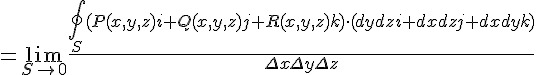 ; 根據下表的微量面積算式
; 根據均值定理，S 內部必然有個點
滿足此式
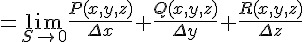 ; 因為 S 無限小，所以 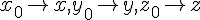 。
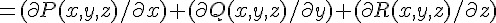 .
說明：上述陳述的證明想法，牽涉到「微量長度、微量面積、微量體積」的表示方法，如下所示：
| 微量極限 | 簡要概念 | 數學定義 |
|---|---|---|
| 微量體積 |  |
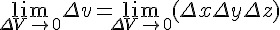 |
| 微量長度 |  |
 |
| 微量面積 | 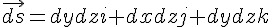 | 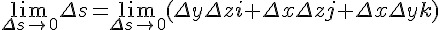 |
注意：在迪卡兒座標系中，向量場 F 的散度為  ，但這個算式其實是
，但這個算式其實是  的內積值，因此數學上才會用類似內積的 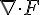 符號代表散度。
的內積值，因此數學上才會用類似內積的 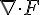 符號代表散度。
環量與旋度
環量與旋度是用來計算環繞著某個封閉曲線的旋轉力量強度，以下是一個環狀向量場的圖示範例：

圖、環形向量場
為了衡量向量場的這種旋轉強度，數學家們定義了環量這個概念。
定義：環量

直覺意義：
F 是一個向量場 (例如磁場)，C 是一條封閉曲線， 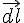 是曲線邊緣的切線向量。
環量和通量一樣，是描述向量場的重要參數，但環量描述的是旋轉的力量總和，而通量描述的是吸引與排斥的力量總和。
某個區域中的環量不等於零，說明這個區域中的向量場表現出環繞某一點或某一區域旋轉的特性。
為了描述一個向量場 F 在一點附近的環量，將閉合曲線 C 收小，使它包圍面的面積 U 趨於零時，可以得到一個平均環量強度的極限值，這個平均環量強度就稱為該點的旋度。
定義：旋度
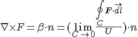直覺意義：
F 是一個向量場 (例如磁場)，C 是一條極小的封閉曲線，U 是 C 所包圍的面積大小。
旋度是環量範圍 C 趨近於零的結果，是某一點的環量除以面積的極限值 (環量密度)。
旋度代表被 C 包圍的那一點在方向 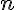 上的旋轉強度。
旋度與方向 有關，在不同的方向旋度也不同。
雖然旋度與散度一樣都是個純量，但是旋度卻必須指定方向 才有辦法計算，因此隨著方向 的不同，得到的旋度也會有所不同。
散度與旋度定理
定理：旋度定理、又稱「斯托克定理 (Stokes theorem)」

直覺意義：
S 是空間中的一個曲面，而 C 是環繞 S 邊緣的封閉曲線。
S 曲面上的旋度總和
，等於S 邊緣任一封閉曲線 C 的線積分 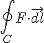 。
斯托克定理的證明想法：在下圖中，S 曲面內方格的共用邊向量會互相抵消，於是只要計算延著邊緣環繞線 C 的向量內積總和  ，就可以算出整體的環量
，就可以算出整體的環量  。
。

圖、斯托克定理 (Stokes theorem) 的適用情況
馬克斯威方程式
在電磁學上，有四個重要的物理量，分別是 - 電場 (E)、磁場 (H)、電通量 (D) 與磁通量 (B) 等，這四個物理量之間可形成四條重要的物理學關係式，這四條關係式便是著名的馬克斯威方程式。
以下是這四個物理量之間的關係式：
| 符號 | 對應的物理量 (四個符號均代表向量場) | 與其他符號間的關係式 |
|---|---|---|
| E | 電場強度 (Electric field intensity) |  ; 其中 ; 其中  為介電率 為介電率 |
| H | 磁場強度 (Magnetic field intensity) |  ; 其中 ; 其中  為導磁率 為導磁率 |
| D | 電通量密度 (Electric flux density) | 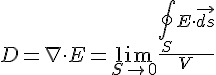 |
| B | 磁通量密度 (Magnetic flux density) |  |
當初馬克斯威寫下的方程式，由於沒有使用「散度」與「旋度」這樣的算子，因此描述起來較為複雜，每個方程式都會寫成一組包含好幾個微分方程式的複雜寫法。但是有了上述的數學概念之後，我們就可以用「散度」與「旋度」這樣的算子，更簡單的描述馬克斯威方程式了。
以下是使用散度與旋度描述的馬克斯威方程式。
| 定律 | 微觀公式 (使用散度、旋度) | 巨觀公式 (使用通量、環量) | 說明 |
|---|---|---|---|
| 法拉第定律 |  |
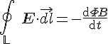 | 磁通量 B 的變化會產生感應電場 E |
| 安培定律 | 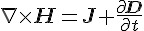 |  |
電流 J 與電通量變化  會產生磁場 H 會產生磁場 H |
| 高斯定律 |  |
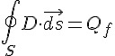 | 電荷密度 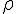 決定電通量 D |
| 自然定律 | 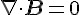 |  |
進入任一區域的磁通量一定等於出去的磁通量 |
如果是在相同的介質當中，上述方程式裏的介電率 與導磁率 就會是固定的，此時整個馬克斯威方程式就可以進一步簡化為下列兩條：
| 定律 | 公式 | 說明 |
|---|---|---|
| 法拉第定律 | 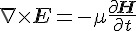 | 磁場強度 H 的變化會產生感應電場 E |
| 安培定律 | 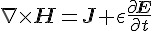 | 電流 J 與電場強度 E 的變化 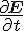 會產生磁場 H |
於是「法拉第定律」與「安培定律」就成了電磁學裏最重要的兩條方程式。
如果將上述相同介質中「法拉第定律」的「散度」與「旋度」等算子 (  ,
,  ) 給還原，然後再將每個方向的分量都寫出來，那麼上述的 算式就可以改寫為下列向量場方程式：
) 給還原，然後再將每個方向的分量都寫出來，那麼上述的 算式就可以改寫為下列向量場方程式：
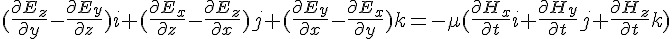
同樣的、安培定律 也可以改寫為以下的向量場方程式：
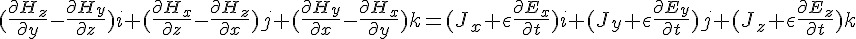
而上述的這種寫法也就是當初「馬克斯威」所寫的方程式形態，這種型態的方程式經過「黑維塞」用 ( , ) 等算子重新詮釋之後，就成了表格中您所看到的簡潔版本了。
根據上述的馬克斯威方程組，我們可以看到介電率和磁導率是兩個重要的常數，通常介電率用符號 表示，而磁導率 用符號 表示。
介電率是介質響應外加電場的極化的衡量值，介電率的測量單位是法拉／公尺（Farad/meter，F/m）。真空狀態的介電率 (「真空介電常數」) 的數值是 
磁導率是一種材料對一個外加磁場線性反應的磁化程度。磁導率 的單位是亨利每米（H/m），或牛頓每安培的平方（  ）。而真空狀態的磁導率為 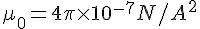 。
）。而真空狀態的磁導率為 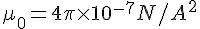 。
波動方程式
以下的向量場微分方程式可以用來描述電磁波的傳遞行為，因此稱為波動方程式 (其中的 E 代表電場，是個向量場)。

根據上述的波動方程式 ，電磁波的速度為  ，在真空狀態下，電磁波的速度等於
，在真空狀態下，電磁波的速度等於  ，也就是光速，這個現象讓馬克斯威直覺的推論出「光是一種電磁波」。
，也就是光速，這個現象讓馬克斯威直覺的推論出「光是一種電磁波」。
那麼、波動方程式是怎麼來的呢？
這個問題的解答，當然是從馬克斯威方程延伸推論而來的，我們只要利用相同介值中的法拉第定律與安培定律，也就是下列兩條，就可以導出波動方程式了。
| 定律 | 公式 | 說明 |
|---|---|---|
| 法拉第定律 | 磁場強度 H 的變化會產生感應電場 E | |
| 安培定律 | 電流 J 與電場強度 E 的變化 會產生磁場 H |
推導：波動方程式
根據上述的法拉第定律與安培定律，可推得下列結果
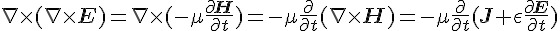 ;
接著假設電流密度為零
，於是得到
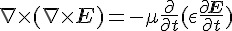 ;
接著根據迪卡兒座標系統中的 curl of curl 定理 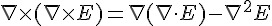 ，可得下式
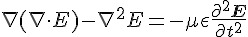 ;
接著假設電荷密度為零
，那麼根據
可推論
，於是得到：
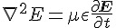 ; 這就是波動方程式了。
接著、我們就可以根據波動方程式推論電磁波的傳遞速度，讓我們用一個範例來看看這個推論：
範例：假設電場 E = P(x,y,z) i + Q(x,y,z) j + R(x,y,z) k ，其中 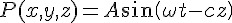 ，而 Q, R 均為 0，那麼那麼請問 c 是多少才會符合波動方程式的解。
解答：
;
;
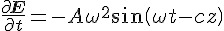 ;
接著根據波動方程式 ，可以得到下式：
;
所以可以推論
.
因此、上述範例中的電場之函數如下：
;
.
這代表 E 為一個往 z 軸方向行進的電磁波，其振幅為 A，而頻率為  ，且行進速度為 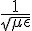 。
，且行進速度為 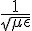 。
說明：上述電場波動的振幅為 A，頻率為 是比較容易理解的，學過 sin, cos 等三角函數的人應該可以輕易理解。 但是為何行進速度為 呢？
如果您想像一個海浪，正往右方打去，那麼該海浪的速度為多少呢？一個直覺的看法是看波峰走的距離，然後除以花費的時間就得到速度。
同樣的，對於 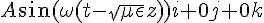 這個波而言，如果在 t 時間波峰在 z，且在 t+dt 這個時間點波峰在 z+dz，那麼我們就可以用 dz/dt 來計算波速。而要保持某點在正弦波上的位置不變，方法就是用 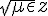 去抵銷 t 所造成的功效，也就是兩者都在波峰、或者兩者都在波谷的情況。
因此該電磁波的速度就是滿足 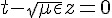 的情況，於是我們可以得到：
; 在某個時間 t，位置 z 處的電場大小為
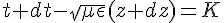 ; 在經過 dt 時間後，我們希望看到那個同樣大小的
向量移動到 z+dz。
; 也就是該電場大小不變，但是位置從 z 移到了 z+dz。
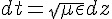 ; 於是我們找出 dt 與 dz 的關係式。
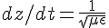 ; 也就是速度為
.
而且、我們知道在真空中，介電率  與 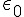 代入後，該速度 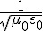 恰好為光速， 這也正是馬克斯威推論光波為一種電磁波的原因。
與 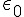 代入後，該速度 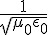 恰好為光速， 這也正是馬克斯威推論光波為一種電磁波的原因。
參考文獻
- College Physics, OpenStax College.
- Wikipedia:James Clerk Maxwell
- 維基百科：馬克士威方程組
- 維基百科：詹姆斯·克拉克·馬克士威
- 維基百科：論法拉第力線
- 維基百科：論物理力線
- 維基百科：電磁場的動力學理論
- 維基百科：麥克斯韋關係式
- 維基百科：旋度
- 維基百科：散度
- 維基百科：電容率
- 維基百科：磁導率
- 線代啟示錄：梯度、旋度與散度
【本文由陳鍾誠取材並修改自 維基百科 與 OpenStax College 的 College Physics 一書，採用創作共用的 姓名標示、相同方式分享 授權】